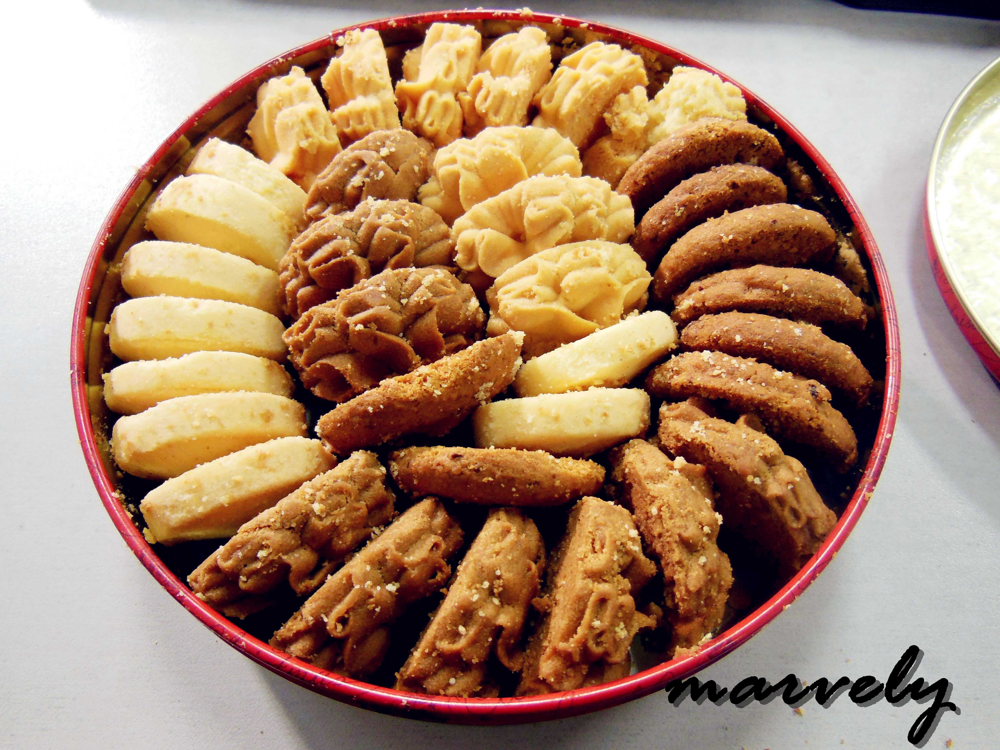

圣诞节是基督教世界最大的节日
每年12月25日是全世界大多数基督徒纪念耶稣诞生的日子。
教会开始并无圣诞节，约在耶稣升天后百余年内才有。
12月25日原来是波斯太阳神（即光明之神）密特拉的诞辰
原来1月6日的主显节就只纪念耶稣受洗了
但天主教会又把12月25日定为“三王来朝节”
以纪念耶稣生时东方三王（即三位博士）来朝拜的故事
在欧美许多国家里
人们非常重视这个节日，把它和新年连在一起
而庆祝活动之热闹与隆重大大超过了新年
成为一个全民的节日.
每年12月25日是全世界大多数基督徒纪念耶稣诞生的日子。
教会开始并无圣诞节，约在耶稣升天后百余年内才有。
12月25日原来是波斯太阳神（即光明之神）密特拉的诞辰
原来1月6日的主显节就只纪念耶稣受洗了
但天主教会又把12月25日定为“三王来朝节”
以纪念耶稣生时东方三王（即三位博士）来朝拜的故事
在欧美许多国家里
人们非常重视这个节日，把它和新年连在一起
而庆祝活动之热闹与隆重大大超过了新年
成为一个全民的节日.
左移动 右移动
Francois
圣诞树（Christmas
tree）是圣诞节庆祝中最有名的传统之一。通常人们在圣诞前后把一棵常绿植物如松树弄进屋里或者在户外，并用圣诞灯和彩色的装饰物装饰。并把一个天使或星星放在树的顶上。
圣诞节为什么要种圣诞树？
圣诞老人（Santa
Claus）又有人称他为圣·尼古拉斯，是一位专门为好孩子在圣诞节前夜送上礼物的神秘人物。传说每到12月24日晚上，有个神秘人会驾乘由9只驯鹿拉的雪橇，挨家挨户地从烟囱进入屋里，然后偷偷把礼物放在好孩子床头的袜子里，或者堆在壁炉旁的圣诞树下
神秘的圣诞老人


一位专门为好孩子在圣诞节前夜送上礼物的神秘人物。
传说每到12月24日晚上
有个神秘人会驾乘由12只驯鹿拉的雪橇
挨家挨户地从烟囱进入屋里
然后偷偷把礼物放在好孩子床头的袜子里
或者堆在壁炉旁的圣诞树下
虽然没有人真的见过神秘人的样子
但是人们通常装扮成头戴红色圣诞帽子
大大的白色胡子，一身红色棉衣，脚穿红色靴子的样子
因为总在圣诞节前夜出现派发礼物，所以习惯地称他为"圣诞老人"。
圣诞老人源于欧洲的民间传说。
传说每到12月24日晚上
有个神秘人会驾乘由12只驯鹿拉的雪橇
挨家挨户地从烟囱进入屋里
然后偷偷把礼物放在好孩子床头的袜子里
或者堆在壁炉旁的圣诞树下
虽然没有人真的见过神秘人的样子
但是人们通常装扮成头戴红色圣诞帽子
大大的白色胡子，一身红色棉衣，脚穿红色靴子的样子
因为总在圣诞节前夜出现派发礼物，所以习惯地称他为"圣诞老人"。
圣诞老人源于欧洲的民间传说。
-
中国
中国圣诞节,是一种娱乐表达。就如同2月14日“情人节”,也如同11月11日“光棍节”,更如同2013年1月4日这个“一生一世节”,圣诞节，或许只是国人娱乐一把的一个载体或是借口。
-
英国
他们认为圣诞节必须吃得痛快。所以圣诞大餐极为丰富，包括猪肉、烤火鸡、圣诞布丁、圣诞碎肉饼......等等。家里每一个人都有一份礼物连仆人也有，礼物都在圣诞节的早晨分赠。
-
法国
在圣诞节前夕都要到教堂参加午夜弥撒。弥撒后家人同往年长兄姐家中团聚共享圣诞餐，并分享一年来家中要事。偶有家人不和之事，亦常因圣诞欢聚而尽释前嫌，言归于好。
-
西班牙
该国的孩童常将鞋子放在窗口或门外，以接受圣诞礼物。在许多城市中，男孩子也常备有许多高级礼物，要送给美丽女子
-
美国
一个自由且多彩的国家，圣诞节是他们快乐狂欢的日子。美国的民族复杂，所以其庆祝方式常因移民的不同而有所差异。大部分室内都有别致的布置，门外悬挂着美艳的花环及绮丽的饰物
-
日本
虽然日本非基督教国家，但战后日本过圣诞节的风气十分风靡。原因之一与各大商家的促销有关。有的百货公司以圣诞树作装潢，在店内布置雪景，增加银色圣诞的气氛。
中国的圣诞节，又名“虐狗节”
单身人士一般笑称自己为“单身狗”
圣诞节也是“第二个情人节”
所以高校里的学子们最为热衷于此
尤其是那些热恋之中的情侣
都会选择在平安夜里聚众狂欢
同样因为没有假期
圣诞节完全没有阖家团聚的意义
圣诞节也就止于圣诞夜
我国喜欢圣诞的年轻人的理由是“因为浪漫”
“是一个快乐的借口”等等
其实他们喜欢的是的圣诞节特有的一种情调。
单身人士一般笑称自己为“单身狗”
圣诞节也是“第二个情人节”
所以高校里的学子们最为热衷于此
尤其是那些热恋之中的情侣
都会选择在平安夜里聚众狂欢
同样因为没有假期
圣诞节完全没有阖家团聚的意义
圣诞节也就止于圣诞夜
我国喜欢圣诞的年轻人的理由是“因为浪漫”
“是一个快乐的借口”等等
其实他们喜欢的是的圣诞节特有的一种情调。


圣诞大餐正像国人过春节吃年夜饭一样
欧美人过圣诞节也很注重全家团聚
围坐在圣诞树下，共进节日美餐
全家老小约上亲友成群结队地到餐馆去吃一顿圣诞大餐
其中，火鸡、腊鸡、烧牛仔肉和猪腿必不可少
传统的圣诞大餐，在最早的时候流行吃烤猪、火腿
后来是火鸡、三文鱼,总之是以肉为主
除了吃肉，圣诞大餐还得有红酒
欧美人过圣诞节也很注重全家团聚
围坐在圣诞树下，共进节日美餐
全家老小约上亲友成群结队地到餐馆去吃一顿圣诞大餐
其中，火鸡、腊鸡、烧牛仔肉和猪腿必不可少
传统的圣诞大餐，在最早的时候流行吃烤猪、火腿
后来是火鸡、三文鱼,总之是以肉为主
除了吃肉，圣诞大餐还得有红酒
- 圣诞节火鸡
- 耶诞曲奇 
- 圣诞海鲜
- 草莓派
- 黑椒牛排
- 圣诞主题甜甜圈
- 水果沙拉
- 圣诞布丁
- 意大利面
{kind=link}
{kind=link}
{kind=link}
{kind=link}
{kind=link}
{kind=link}
{kind=link}
{kind=link}
{kind=link}
越来越临近圣诞节了
作为此网站作者的我，当然要在这里
祝福大家一句：圣诞快乐啦！
祝我们致礼信息科技有限公司的所有人：
圣诞快乐！Merry Christmas!!
没有男\女盆友的祝你们早日找到他\她
有男女朋友的..咳咳
在节日那天少虐那些单身狗们吧..
最后，还是祝事业有成
工作称心称意，爱情甜甜蜜蜜
永远做一个快乐的人，嘿嘿
作者： Alex 李嘉伟 留
2016.12.24日
作为此网站作者的我，当然要在这里
祝福大家一句：圣诞快乐啦！
祝我们致礼信息科技有限公司的所有人：
圣诞快乐！Merry Christmas!!
没有男\女盆友的祝你们早日找到他\她
有男女朋友的..咳咳
在节日那天少虐那些单身狗们吧..
最后，还是祝事业有成
工作称心称意，爱情甜甜蜜蜜
永远做一个快乐的人，嘿嘿
作者： Alex 李嘉伟 留
2016.12.24日